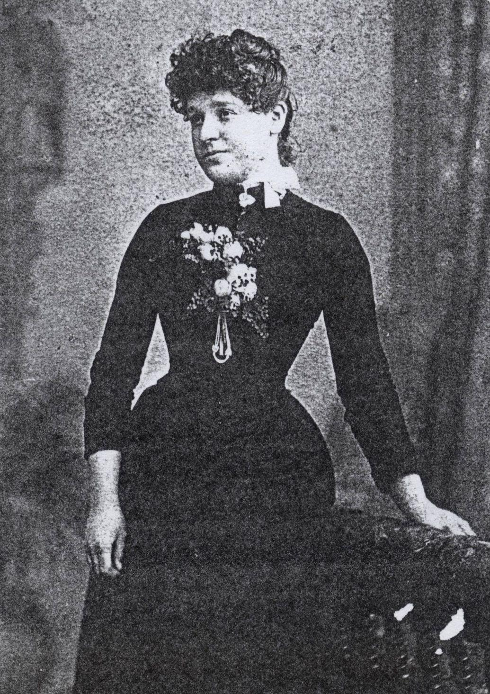
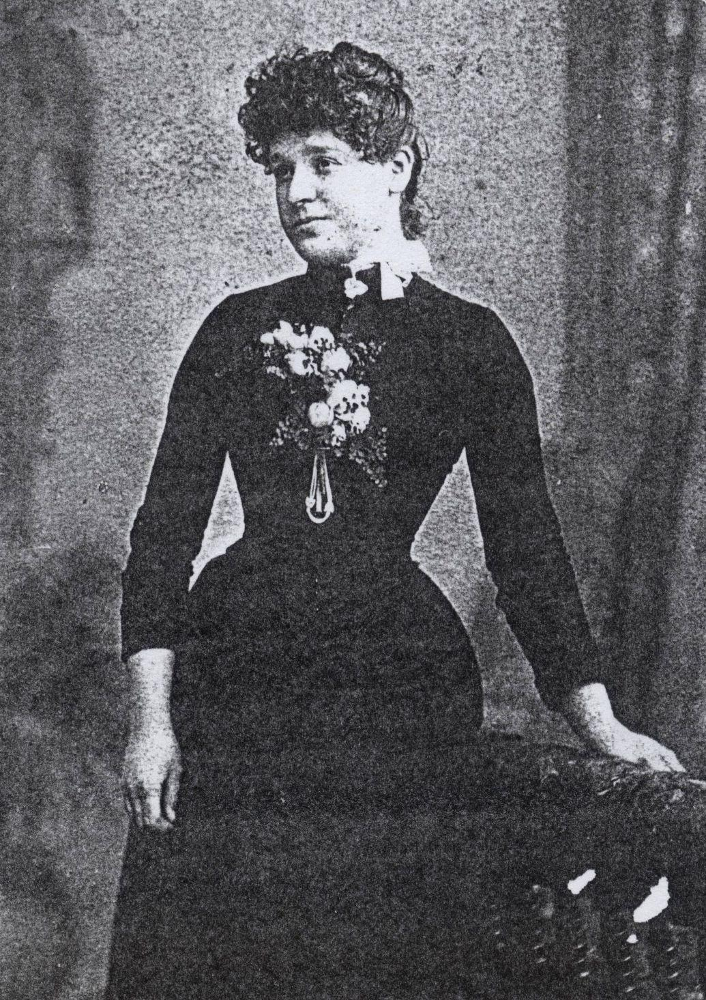

1. Mary Ann Barrett/Jarvis
Photographer Stump & Co. Gresham Gallery, King William Street, Adelaide.
Studio operated between the years 1888 to 1889 only. No records kept.
Information written on back of photograph. This is my Grandma Jarvis - nee
Barrett. This photo shows an amazing likeness to several members of the
Jarvis family. My cousins, some older than me - well mostly older as I am of
a late marriage.. Written by Mary Ellen Jarvis/Howie. (page 27)
2. The Jarvis men
Photographer Hammer & Co. 184 Rundle Street, Adelaide. There were several
studios operating under this name at different addresses in Adelaide between 1884
and 1891. Studio operated between the years 1888 to 1889 only. No record.
I do not have years of individual studios. It should be noted that Mary
Ann, wife of Joshua could not write when they were married in 1855, however, she
could have learnt over the intervening years, especially to write her own name.
On rear of photograph is the following information:
By special appointment to His Excellency, Sir W.C.F. Robinson K.C.M.G.
Hammer & Co. Artists & photographers, 184 Rundle Street, Adelaide.
Oil, water, colour and Mezzotint enlargements A Speciality.
Additional copies of this photograph always obtainable Signed for by J Barrett.
Photo consists of 4 men unknown. Suggested by Joan they could be Jarvis brothers.
(Page 23)
The photograph of the 4 men was taken before 1891. It should be noted the ages of the men would have been in 1885 when Joshua died:
Edward born 1858 - 27 years old
Joshua born 1862 - 23 years old
Arthur born 1864 - 21 years old
Walter born 1877 – 8 years old
Joshua was born c 1832 died 1877 aged 45 years. Could this be Joshua and 3 sons?
3. Walter Jarvis.
Photographer Great Northern Photographic Co. Manager A. Francis.
Studio's operation or position unknown
Written on back of Photo - Uncle Wally Jarvis. Actually he and my father were
very much alike till my father lost weight. Signed Nell Howie 13/8/80.(Page 29)
4. Edith Jarvis/Combe
From the studio of T. or J. Duryea, Artist in Photography, No. 158a Rundle
Street, Adelaide. Portraits enlarged and finished in oil. Water colour or crayon.
Additional copies obtainable at reduced rates.(Page 28)
I have written to the Public Records Office in Adelaide to see if they hold any old records for the above photographers. No more information available.

 
